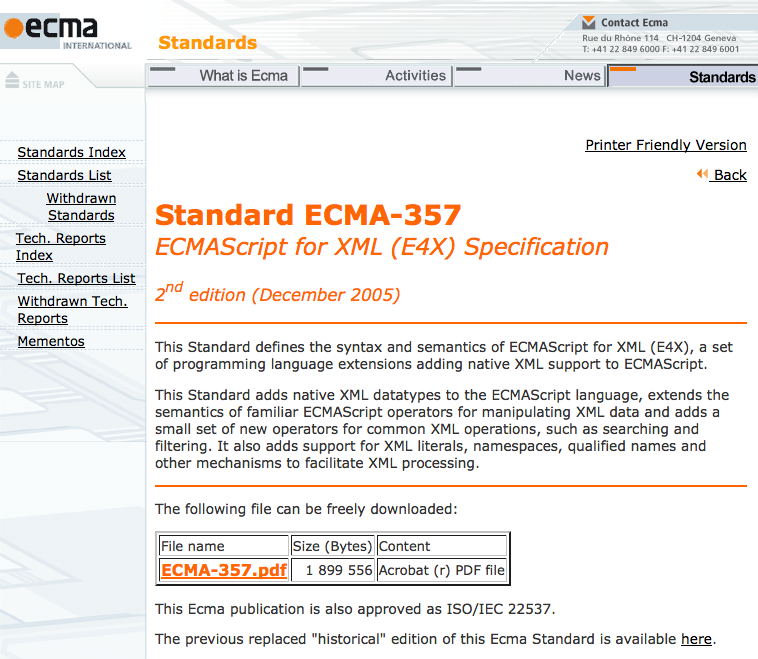
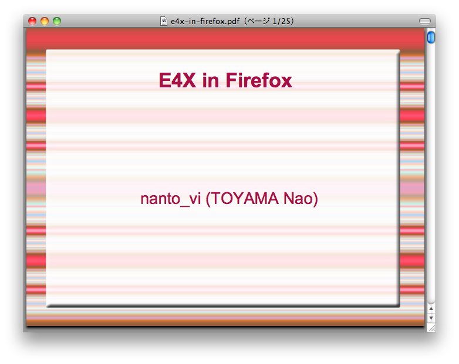
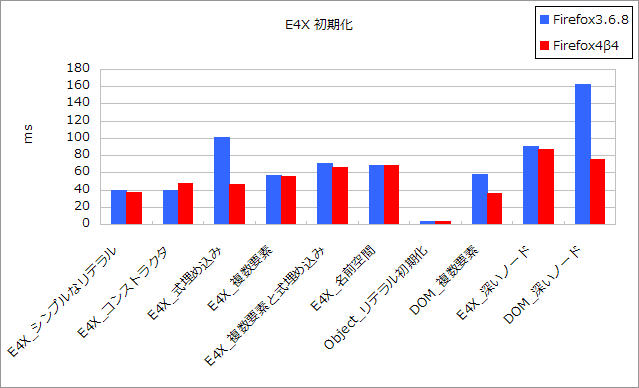
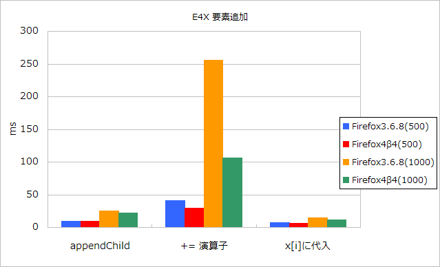
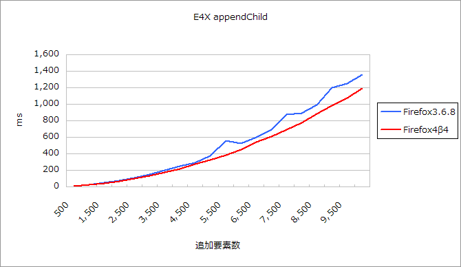
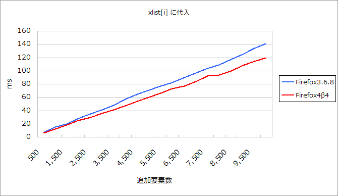
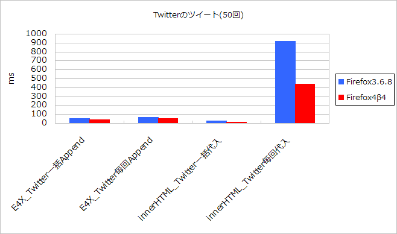

ECMAScript
for
XML

ECMAScript
for
XML
E4XMozilla 勉強会@東京 4th |

var x =
- hoge
- piyo
;
alert(x.item[0]); // hoge
みたいなことができる
詳しいことは、前項の仕様か、E4X in Firefox 発表資料を読もう

はまりポイントなど
名前空間がからむと、文字列化時に変なことになる
default xml namespace = "";
var x = <div xmlns="http://www.w3.org/1999/xhtml"/>
x.appendChild(non-namespace
);
x.appendChild(xhtml namespace
);
non-namespace
xhtml namespace
空の名前空間を指定した部分が無くなってる。本来は下記のようになっているべき。
non-namespace
xhtml namespace
名前空間が上書きされているように見えるだけ
x.*[0].name() // p == QName("", "p")
x.*[1].name() // http://www.w3.org/1999/xhtml::p == QName("http://www.w3.org/1999/xhtml", "p")
変な名前空間名が付く
var ns = "http://www.w3.org/1999/xhtml";
var x = <div xmlns={ns}>
hoge
</div>;
x.ns::p.@class = "hogeClass";
ごく普通の操作ですね？
hoge
もう一つ
var ns = "@mozilla";
var x = <div xmlns={ns}>
hoge
</div>;
x.ns::p.@class = "hogeClass";
ちょっと変な名前空間にしてみますよ...
hoge
何ですか、この接頭辞は？
var x =
hoge
piyo
;
x.a === x.a // false
x.a[0] === x.a[0] // true
[[Get]][[Get]]を上書きMozilla の独自拡張
[[Get]]/[[Put]]の動きを変更させる
var x =
hoge
foo
xml element
;
x.length // xml element
x.function::length // function length() { [native code] }
idがbの要素を取りたいな
var x =
hoge
piyo
fuga
;
フィルタを使って..
x.list.(@id == "b");
// ReferenceError: reference to undefined XML name @id
あー、もしかして、id属性を持っていないものがあるとエラーになる？
んじゃ、hasOwnPropertyメソッドを使って存在する場合...にすれば良いよね
x.list.(hasOwnProperty("@id") && @id == "b");
// <></>
Ｗ Ｈ Ｙ ？
hasOwnPropertyメソッドはグローバルオブジェクトのhasOwnProperty(ブラウザ上ならwindow)で、XML オブジェクトのものではない。[[Get]]はメソッド取得を行わないそこで、function名前空間
x.list.(function::hasOwnProperty("@id") && @id == "b");
// piyo
XML オブジェクトを prototype 拡張して使いやすく
XML.prototype.function::toDOMNode = function toDOMNode(){
// ...
}
XML.prototype.function::foo = "abc";
alert(XML.prototype.function::foo); // "undefined"
var x = <root/>;
alert(x.function::foo); // "undefined"
ブラックホールに飲み込まれた？
__defineGetter__とか罠チック
XML.prototype.__defineGetter__("hoge", function(){
alert(this);
return "HOGE";
});
var x = hoge
;
x.function::hoge; // alert が２回出る しかも、return値なし
そんなの知りません。E4Xは扱いやさが全てです！

new XML(...)より、リテラルで書いた方が多少速い

appendChild遅い+=演算子による追加は超スーパー遅い
var x = ;
for (var i = 0; i < times; i++){
x.appendChild(hoge);
}
xlist[i]に代入
var xlist = new XMLList();
for (var i = 0; i < times; i++){
xlist[i] = hoge;
}
var x = {xlist};
実用面を考慮して、Twitterのツイートを50個作成し追加

innerHTMLに一括代入速い+=で代入は超遅いDOM APIを使用した要素作成は気持ちが萎えて、やってません。すみません。
toString()するなら要注意
ご清聴ありがとうございました
↓↓資料↓↓
http://teramako.github.com/doc/modest-20100904/index.html